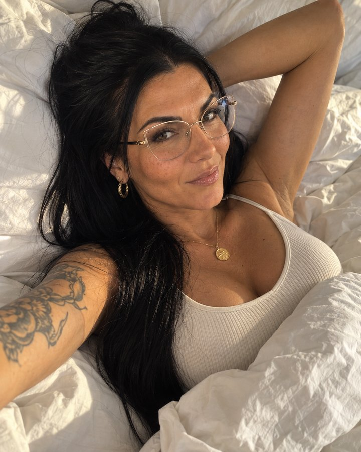
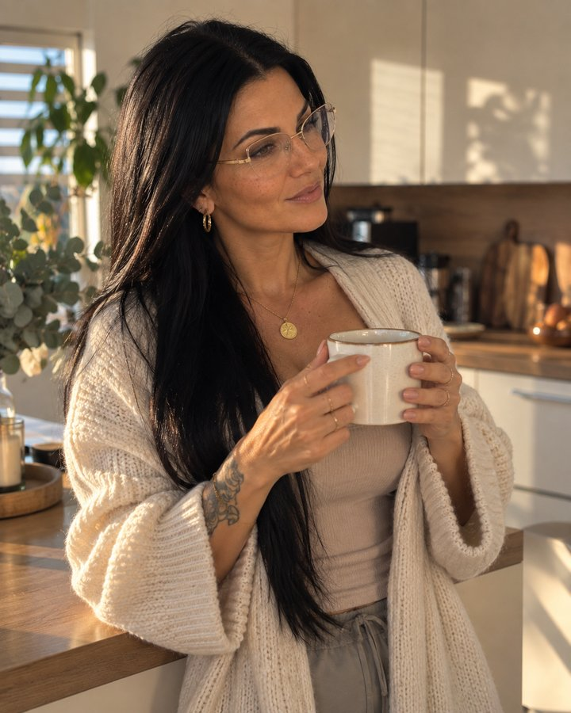
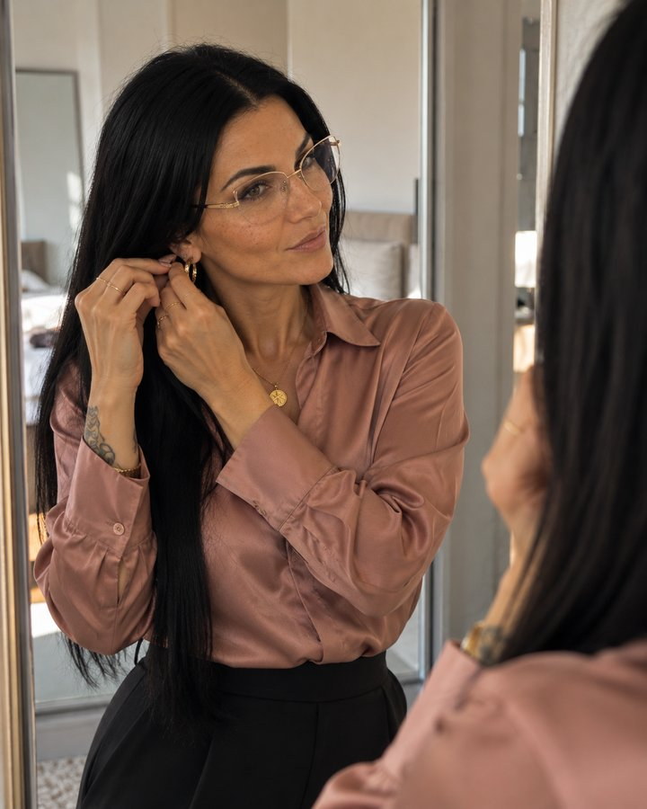
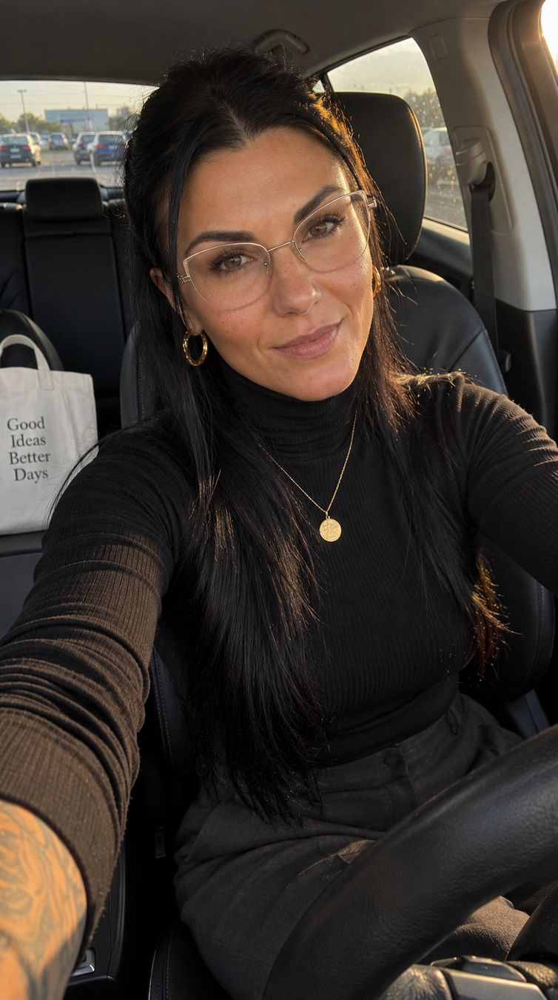
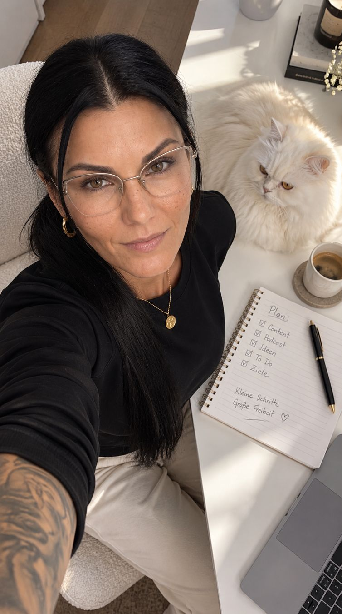
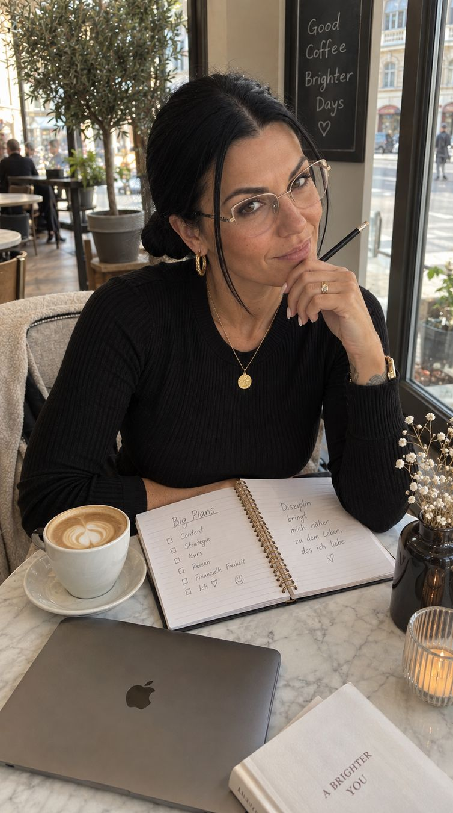
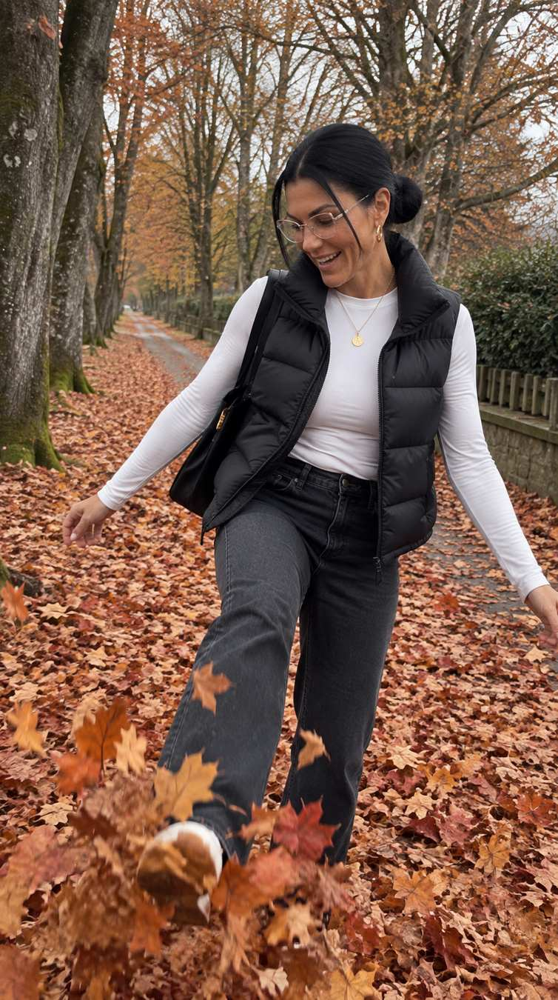
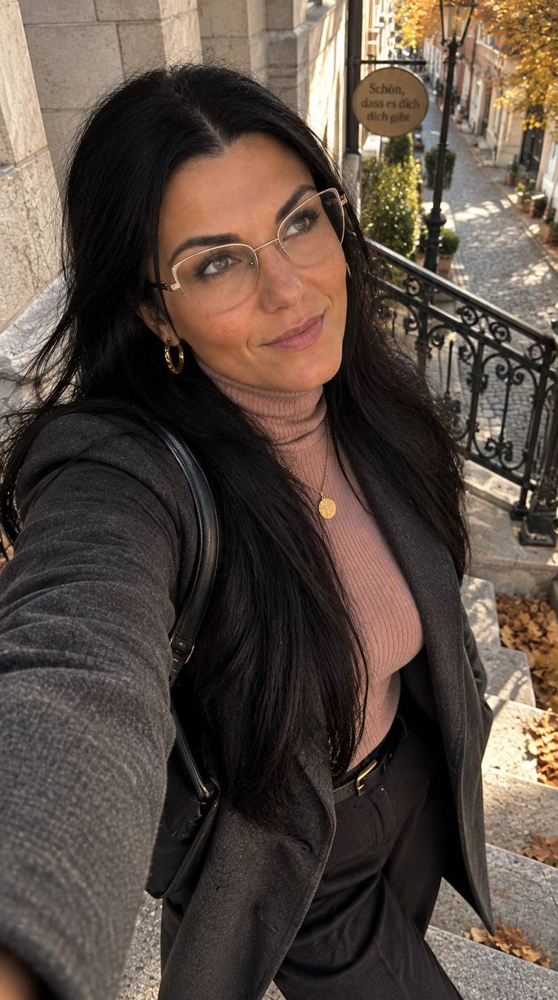
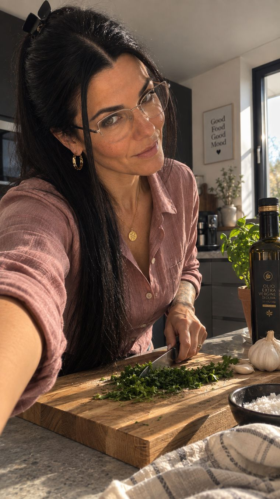

Stell oben einmal ein, wie du aussiehst. Alle zwölf Prompts darunter schreiben sich mit — du kopierst nur noch. Kein Englisch nötig, daneben steht auf Deutsch, was drinsteht.
Zum ersten Mal hier?
So geht’s — auch wenn du noch nie ein KI-Bild gemacht hast
Such ein Foto von dir aus.Ein Handy-Foto reicht. Tageslicht, dein Gesicht gross und scharf. Weiter unten steht genau, worauf du achten musst.
Öffne ChatGPT oder Higgsfield.Zum Ausprobieren reicht die kostenlose ChatGPT-Version — dort gehen aber nur wenige Bilder pro Tag.
Stell unten ein, wie du aussiehst.Haare, Alter, Statur, Brille, Schmuck — und dein Werkzeug (ChatGPT oder Higgsfield). Einmal reicht.
Tipp bei einem Prompt auf „Kopieren“.Du musst nichts auf Englisch verstehen. Unter „Auf Deutsch“ steht, was drin steht.
Lade dein Foto hoch, füge den Prompt ein, schick ab.In ChatGPT: unten auf + tippen → dein Foto wählen → ins Textfeld tippen, gedrückt halten, „Einfügen“ → Pfeil.
Speicher dein Bild und schreib „KI-generiert“ drauf.Klein in eine Ecke. Das gehört dazu, weil es ehrlich ist.
Mein Avatar
Damit arbeite ich
Das ist mein Avatar — entstanden aus einem einzigen Referenzfoto. Keine Kamera, kein Fotograf, kein Studio. Dieselbe Frau in jeder Situation, immer wiedererkennbar.
Bild 01, 02 und 03 sind genau mit Prompt 01, 02 und 03 von dieser Seite entstanden. Die anderen Bilder unten sind mit früheren Prompts gemacht. Sie zeigen dir, was mit einem guten Referenzfoto möglich ist.

01 · Aufwachen

02 · Kaffee

03 · Fertig machen

04 · Im Auto

05 · Schreibtisch

07 · Mittagessen

08 · Spaziergang

10 · Goldene Stunde

11 · Abends
Alle Bilder KI-generiert.
Zuerst
Dein Referenzfoto
Ohne Foto funktioniert kein Prompt. Dein Gesicht steht nicht im Text — es kann gar nicht drinstehen. Kein Satz beschreibt ein Gesicht so genau, dass am Ende du herauskommst.
Das Foto liefert das Gesicht. Der Text liefert alles andere: Haarlänge, Haarfarbe, Hautton, Brille, Schmuck. Ohne diese Angaben driftet die KI ab — sie macht dunkle Haare bräunlich und nimmt die Brille weg.
So soll es sein
Gesicht scharf und gross im Bild
Von vorn oder leicht schräg
Gleichmässiges Licht, weiche Schatten
Nur du drauf
Ein echtes Foto von dir
So nicht
Sonnenbrille, Hand vorm Gesicht
Starker Schatten quer übers Gesicht
Du klein irgendwo in der Landschaft
Zweite Person mit im Bild
Ein KI-Bild als Vorlage
Warum kein KI-Bild als Vorlage: Die KI baut dann auf einer Kopie auf. Nach drei Runden wanderst du langsam weg von dir selbst. Nimm ein echtes Foto — oder wenn schon ein KI-Bild, dann immer dasselbe.
Tattoo, Narbe, Muttermal? Beschreib es nicht, zeig es. Wörter geben dir irgendein Tattoo. Häng in Higgsfield ein zweites Referenzbild an — der Arm gross und scharf — und schreib dazu, welches Bild wofür ist. Der Umschalter unten setzt dir die zwei Zeilen automatisch ein.
Einmal einstellen
Deine Bausteine
Einmal einstellen. Danach steckt es in jedem Prompt hier auf der Seite. Länge und Farbe sind getrennt, damit auch kurze rote oder lange graue Haare vorkommen. Wer ein Kopftuch trägt, wählt es oben — dann fallen die Haar-Menüs weg. Und die Statur ist ein eigenes Menü, weil KI sonst jede Frau schlank macht.
Hast du ein Bild gemacht? Schick es mir per DM auf Instagram mit dem Wort BILD — ich will es sehen! 🤍 @liliyaavramova.ki
Und wenn du eine Situation brauchst, die hier fehlt?
Dann wird’s schwieriger.
Mit diesen zwölf Prompts hast du einen ganzen Tag. Das reicht für deine ersten Wochen.
Aber irgendwann willst du eine Situation, die hier nicht dabei ist. Du weißt genau, welche — und dann müsstest du der KI noch erklären, wie du stehst, aus welcher Perspektive, welches Licht, welche Umgebung. Und plötzlich schreibst du einen halben Roman als Prompt.
Genau dafür nutze ich THE REAL LIFE. Ich gebe vor, welche Situation ich möchte — oder welche Referenz ich nachbauen will — und bekomme daraus einen fertigen, detaillierten Prompt.